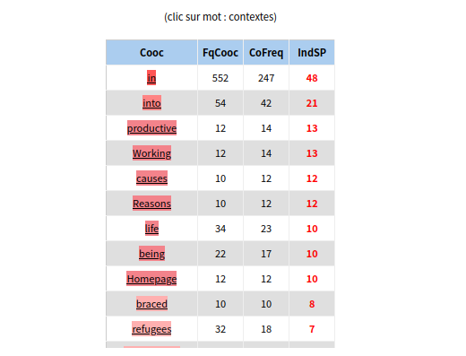
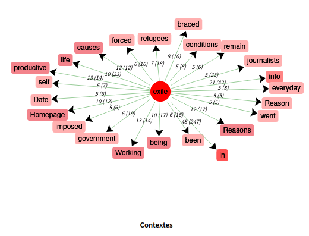

Anglais : exile

dictionnaire anglais

contexte du mot anglais "exile"

graphe du contexte du mot anglais "exile"
Analyse du corpus anglais :
Le dictionnaire du contexte anglais montre qu'à part des mots vides commes des articles (the, a) ou des prépositions (for, to), le mot anglais "exile" apparaît de manière assez fréquente dans les articles, ce qui garantit un contexte pertinent pour l'analyse suivante sur le mot "exile".
Dans le corpus anglais, les mots les plus représentés autour du terme "exile" montrent, dans une certaine mesure, le sens essentiel du mot "exile" dans le contexte.
Lorsque nous observons les mots dans le tableau des contextes, les prépositions au premier rang comme "in" et "into" maruqent le changement d'état (d'un endroit à un autre) du mouvement "exile".
À l'exception de ces grammèmes, certains mots dans la liste reflètent les circonstances du mot "exile" : "Reasons" ou "causes" de "exile" sont fréquemment mentionnés dans le corpus, ainsi sont intriduits les mots comme "Working" et "life", qui seraient les raisons pour ce mouvement. En plus, le mot "refugees" dans le tableau indique également l'agent principal du mouvement.
Si nous avons besoin d'une perception plus claire sur les contextes du mot "exile", le graphe nous précise que les administrations ("government") et les média (journalists) jouent aussi un rôle important dans les articles concernant "exile", ce qui est raisonnable car les dépaysements politiques sont souvent provoqués par des raisons administratives et les journalists sont les plus concernés par ce problème.